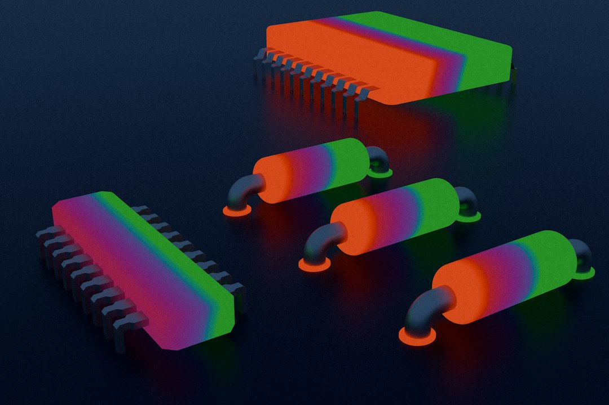

트럼프, 애플에 중국산 메모리 퇴출 압박…CXMT 배제 현실화

[자료사진] 기사와 무관한 이미지입니다.
트럼프 행정부는 2026년 10월 현재 애플에 중국 CXMT(창신메모리) 및 YMTC 생산 메모리 사용 중단을 공식 요청한 것으로 확인됐다. 이는 상무부의 Entity List 확대 조치와 연동된 공급망 압박으로, 단순 권고가 아닌 연방 조달·보조금 조건과 연계된 사실상의 강제 조항 성격이다.
CXMT는 2026년 기준 LPDDR4X 양산 능력을 월 4만 장(300mm 웨이퍼 기준)까지 확대했고, 샤오미·OPPO 등 중국 OEM에 납품하며 점유율을 키워왔다. 애플은 직접 채택하지 않았지만, Tier-2 협력사(Foxconn·Pegatron 산하 부품 조달)를 통해 중국산 낸드·DRAM이 일부 모듈에 유입될 수 있다는 점이 이번 압박의 실질적 배경이다.
삼성전자는 아이폰 16 시리즈에 LPDDR5X와 UFS 4.0을 공급 중이며, SK하이닉스는 LPDDR5X 점유율을 아이폰 17 시리즈에서 30% 이상으로 확대하는 협상을 진행 중인 것으로 알려졌다. 중국산 메모리 배제가 현실화되면 두 회사의 애플향 매출이 연간 합산 3~5억 달러 추가 확대될 수 있다는 시장 추정치가 있다.
그러나 CXMT LPDDR4X의 스팟 단가는 삼성·SK 동급 제품 대비 30~40% 낮다. 애플이 중국산을 배제할 경우 아이폰 BOM 중 메모리 비용이 기기당 1.5~3달러 상승한다. 박마진 iPhone SE 라인업과 신흥국 보급형 모델에서 원가 부담이 집중된다.
이 압박의 핵심은 '기술 수준'이 아니라 '원산지 통제'다. CXMT 메모리가 삼성·SK 대비 성능이 열위여서 배제하는 게 아니라, 미국 정부가 공급망 내 중국산 반도체 비중을 추적·제거하는 인프라를 애플 같은 대형 구매자를 통해 구축하려는 것이다. 이는 향후 인텔·퀄컴·구글 하드웨어에도 동일 압박이 적용될 수 있는 선례가 된다.
한국 메모리 업체 입장에서는 단기 수혜이지만, 구조적 위험도 동시에 작동한다. 중국 시장 매출(삼성 D램 중국향 약 28%, SK하이닉스 약 35%)이 맞대응 규제 타깃이 될 경우 애플 수혜분을 상쇄할 수 있다. 2025년 삼성전자 반도체 부문의 중국 매출 비중은 전체의 약 25%였다.
삼성전자·SK하이닉스: 아이폰 LPDDR5X·UFS 4.0 공급 확대 직접 수혜. SK하이닉스는 2026년 아이폰 17 시리즈 메모리 점유율 30% 이상 목표로 협상 중이며, 삼성전자는 기존 40~45% 점유율 유지가 목표다.
미국 Micron: 중국산 배제 기조에서 가장 안전한 원산지를 가진 D램 공급자. 아이폰 채택 비중 확대를 위해 LPDDR5X 생산능력을 인도 어셈블리 라인과 연계하는 협상을 진행 중이다.
CXMT·YMTC: 글로벌 최대 단일 소비자인 애플 공급망 진입 차단이 현실화되면 양산 스케일 확보를 통한 원가 절감 경로가 막힌다. 중국 내 OEM에만 의존하면 연간 생산 능력 대비 가동률이 60% 이하로 하락할 리스크가 있다.
애플 신흥국 보급형 전략: 기기당 메모리 BOM 1.5~3달러 상승은 인도·브라질 시장 공략용 저가 모델 마진에 직접 타격을 준다. 현지 조립 인센티브(인도 PLI 보조금)로 일부 상쇄 가능하지만 완전 보전은 어렵다.
삼성전자·SK하이닉스 투자자라면 애플향 LPDDR5X 수주 동향을 아이폰 17 BOM 분석 리포트(TechInsights 등)로 분기마다 교차 검증할 것을 권한다. 점유율 변동은 메모리 사업부 ASP(평균판매단가)와 직결된다.
부품 구매담당자 입장에서는 '원산지 인증(CoO·CoC)' 요건을 구매 계약서에 선제적으로 삽입해야 한다. 미국 정부의 공급망 투명성 요구가 애플 수준의 글로벌 OEM을 넘어 Tier-2·3 협력사까지 내려올 가능성이 높고, 사후 감사 리스크가 2027년 이후 본격화될 전망이다.
실제 조달 현장에서는 — 2026년 들어 국내 스마트폰 부품 조달 현장에서 '원산지 확인서' 요청 빈도가 전년 대비 2배 이상 늘었다. 중국산 낸드가 유통 과정에서 말레이시아·태국 어셈블리 거쳐 원산지 세탁 가능성이 있다는 구매자 우려가 실제 계약 조건으로 반영되는 중이다. 삼성·SK산 메모리에 원산지 인증서를 요청하는 글로벌 고객이 늘고 있으며, 이는 한국산에 단기 프리미엄 가격 협상력을 부여하는 요인이다.
이 포스팅은 쿠팡 파트너스 활동의 일환으로 수수료를 제공받습니다.